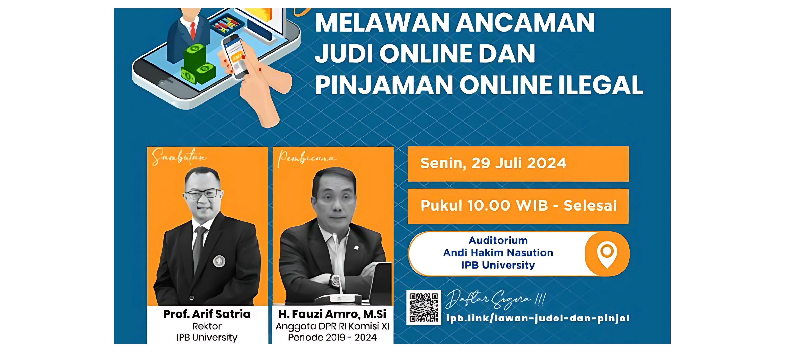
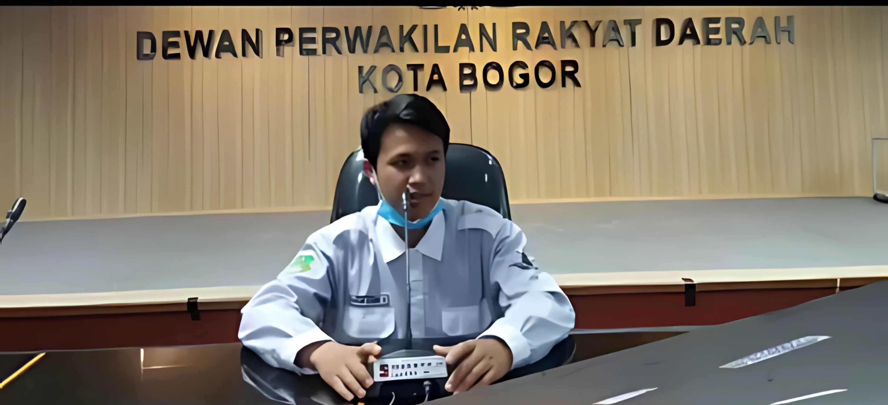
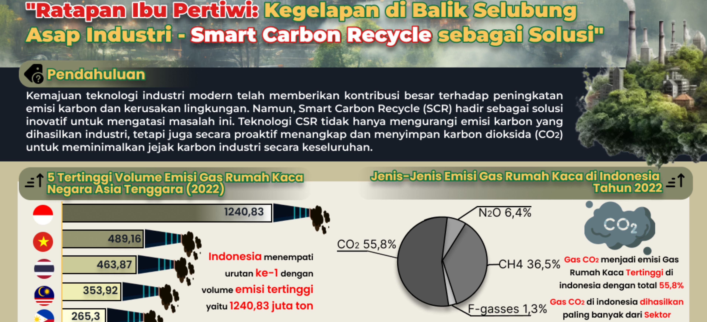
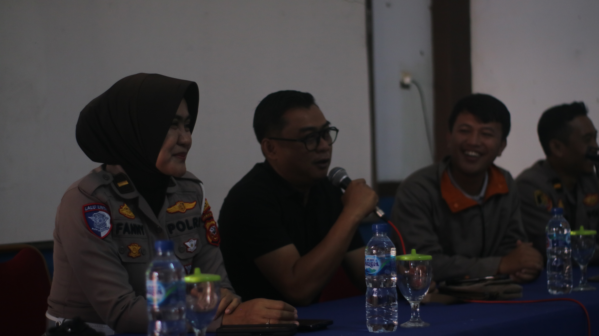
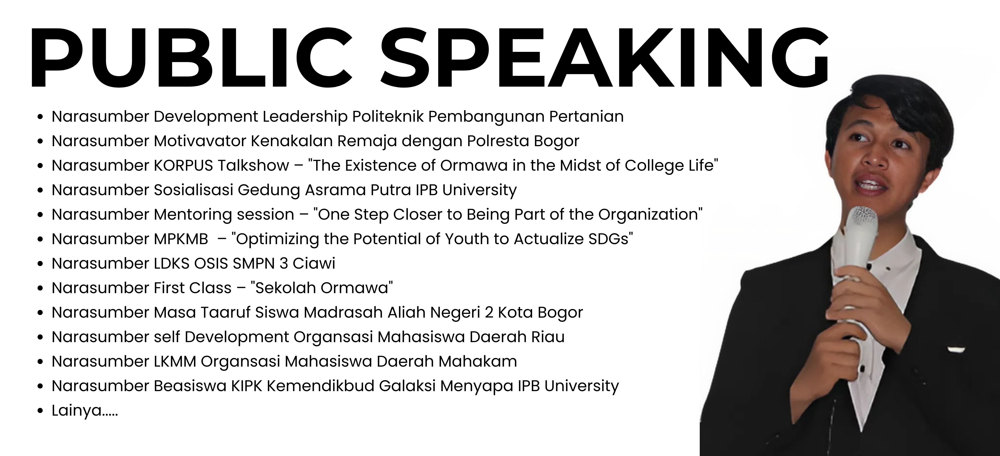

My Adventure

PIMNAS diselenggarakan oleh Kemendikbudristek dengan judul "REFORMIS AGRICULTURE: MENILISIK KAMPUNG ADAT URUG DALAM MEMPERTAHANKAN BUDAYA KERAJAAN PADJAJARAN SEBAGAI REVITALISASI PERTANIAN MODERN".
.jpg)
Memimpin 203 pengurus BEM PKU dan mengelola 90+ program kerja. Berhasil menyelenggarakan Passion X Festival Mahasiswa dengan 4.272 peserta lintas fakultas.
.jpg)
Menyelenggarakan Seminar Pinjaman Online dengan narasumber nasional dari DPR RI Komisi XI, OJK, Bareskrim Polri, Kementerian Kominfo, dan Direktur Ekonomi Digital.

Ketua Humas Seminar Nasional "Melawan Ancaman Judi Online dan Pinjaman Online Ilegal" di Auditorium IPB, dihadiri Rektor IPB dan Anggota DPR RI Komisi XI.

Pengurus Forum OSIS Jawa Barat, diundang memberikan kontribusi dalam LPJ Forum Komunikasi OSIS Kota Bogor di Gedung DPRD Kota Bogor.
.jpg)
Baginaan intensif kepemimpinan, manajemen diri, dan karakter. Membentuk kemampuan berpikir kritis, pengambilan keputusan, dan memimpin dengan baik.

Delegasi IPB University di Satria Data SIC, mengangkat isu emisi gas rumah kaca dan solusi Smart Carbon Recycle (SCR) untuk menekan emisi CO₂ industri.

Bersama POLRESTA Bogor sosialisasi kenakalan remaja. Bersama KSAD, Satlantas, Bareskrim, dan Babinmas. Ditunjuk sebagai motivator.

Pemateri di lebih dari 30 sesi pelatihan dan seminar dengan topik personal branding, kepemimpinan, dan pengembangan karakter.